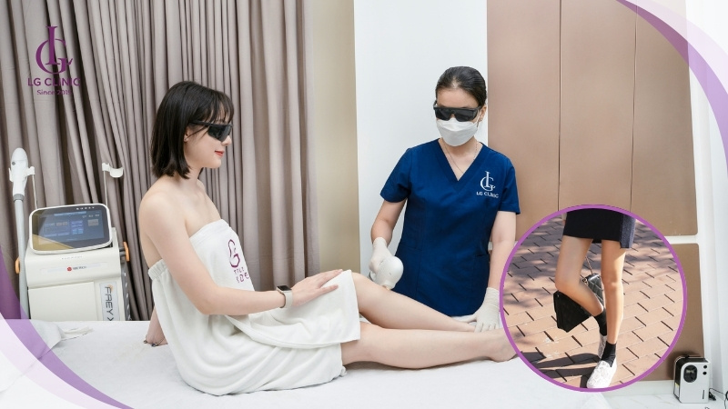

Triệt lông chân an toàn và hiệu quả cùng Skinny Beauty
Triệt lông chân là một trong những bước làm đẹp giúp bạn tự tin khoe đôi chân mịn màng, sạch sẽ. Việc loại bỏ lông chân không chỉ mang lại cảm giác dễ chịu mà còn giúp chăm sóc da tốt hơn, hạn chế các vấn đề về da liễu.
Giới thiệu về triệt lông chân
Ngày nay, nhu cầu triệt lông chân ngày càng tăng cao ở cả nam và nữ. Một đôi chân không có lông giúp bạn thoải mái diện trang phục yêu thích, đồng thời giảm nguy cơ tích tụ bụi bẩn, mồ hôi gây viêm nang lông hoặc mùi khó chịu.

Lý do nên triệt lông chân
- Tăng sự tự tin khi mặc váy, quần short hoặc đi biển.
- Giảm nguy cơ viêm nang lông, mụn lông mọc ngược.
- Giúp da hấp thụ dưỡng chất tốt hơn khi chăm sóc.
- Hạn chế mùi cơ thể do mồ hôi và vi khuẩn bám vào lông.

Các phương pháp triệt lông chân phổ biến
1. Công nghệ ánh sáng (Laser/IPL)
Phương pháp sử dụng ánh sáng tác động vào nang lông, làm suy yếu và ngăn lông mọc lại. Ưu điểm là hiệu quả lâu dài, ít đau, phù hợp với nhiều loại da. Tuy nhiên, chi phí cao hơn các cách truyền thống.
2. Waxing
Waxing là cách loại bỏ lông tận gốc bằng sáp nóng hoặc lạnh. Lông sẽ mọc lại sau vài tuần, nhưng có thể gây đau và kích ứng nếu da nhạy cảm.
3. Phương pháp tự nhiên
Một số nguyên liệu như đường, chanh, nghệ, sữa chua… có thể hỗ trợ làm chậm quá trình mọc lông hoặc tẩy lông nhẹ nhàng tại nhà. Tuy nhiên, hiệu quả thường chậm và cần kiên trì thực hiện.

Cách chọn phương pháp phù hợp
- Nếu muốn hiệu quả lâu dài, nên chọn công nghệ ánh sáng (Laser/IPL).
- Nếu ưu tiên chi phí thấp, có thể thử waxing hoặc các phương pháp tự nhiên.
- Da nhạy cảm nên tránh waxing hoặc thử trước trên vùng nhỏ.
- Luôn tham khảo ý kiến chuyên gia nếu có bệnh lý về da.
Lưu ý khi triệt lông chân
- Không triệt lông khi da đang bị tổn thương, viêm nhiễm.
- Tránh tiếp xúc ánh nắng mạnh sau khi triệt lông.
- Giữ vệ sinh vùng da sau khi triệt lông để tránh nhiễm trùng.
- Dưỡng ẩm và làm dịu da bằng kem chuyên dụng hoặc nguyên liệu tự nhiên.
Trải nghiệm triệt lông chân an toàn – hiệu quả cùng LG Clinic
Với hơn 8 chi nhánh trên toàn TP.HCM và Bình Dương, LG Clinic tự hào là địa chỉ làm đẹp được hàng ngàn khách hàng tin tưởng lựa chọn. Sở hữu hệ thống công nghệ hiện đại, đội ngũ kỹ thuật viên được đào tạo bài bản cùng không gian chuẩn spa 5 sao, LG Clinic cam kết mang đến dịch vụ triệt lông chân hiệu quả vượt trội – không đau rát, không tổn thương da và phù hợp với nhiều loại da khác nhau.
Tại LG Clinic, bạn không chỉ được tư vấn chi tiết về quy trình triệt lông phù hợp mà còn được chăm sóc da chuyên sâu sau liệu trình, giúp làn da luôn mềm mại, sáng khỏe.

👉 Tham khảo thêm về dịch vụ
triệt lông chân,
triệt lông chân,
giá triệt lông chân,
triệt lông chân,
triệt lông chân,
triệt lông chân,
triệt lông chân,
triệt lông chân,
triệt lông chân,
triệt lông chân,
triệt lông chân,
triệt lông chân,
triệt lông chân,
triệt lông chân,
triệt lông chân.
📞 Liên hệ ngay hotline 1900 888 833 hoặc đến chi nhánh gần bạn nhất để được tư vấn miễn phí! 
Kết luận về triệt lông chân hiệu quả
Việc triệt lông chân đã trở thành một phần quan trọng trong chăm sóc cá nhân hiện đại. Với sự đa dạng của các phương pháp từ truyền thống đến hiện đại, mỗi người có thể tìm được giải pháp phù hợp với nhu cầu và ngân sách của mình.
Công nghệ laser và các phương pháp hiện đại mang lại hiệu quả vượt trội, giúp bạn có được làn da mịn màng trong thời gian dài. Tuy nhiên, việc lựa chọn địa chỉ uy tín và tuân thủ quy trình chăm sóc sau triệt lông là yếu tố quyết định thành công.
Nhìn chung, đầu tư vào triệt lông chân chuyên nghiệp sẽ mang lại lợi ích lâu dài không chỉ về mặt thẩm mỹ mà còn về sự tự tin và chất lượng cuộc sống. Hãy cân nhắc kỹ lưỡng và lựa chọn phương pháp phù hợp nhất cho bản thân.